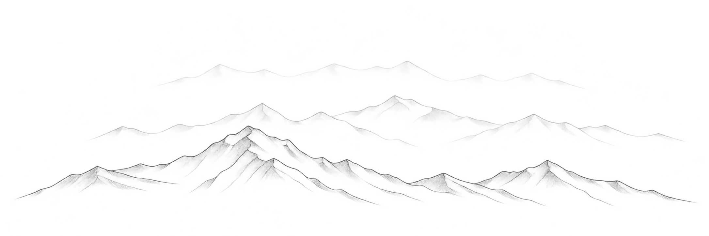

interactive study
mountain studio
generate pencil landscapes with independent terrain styles, creative shape controls, and transparent png export.
open studio

thoughts, notes, and experiments.
small experiments, built by following an idea.

generate pencil landscapes with independent terrain styles, creative shape controls, and transparent png export.
open studio